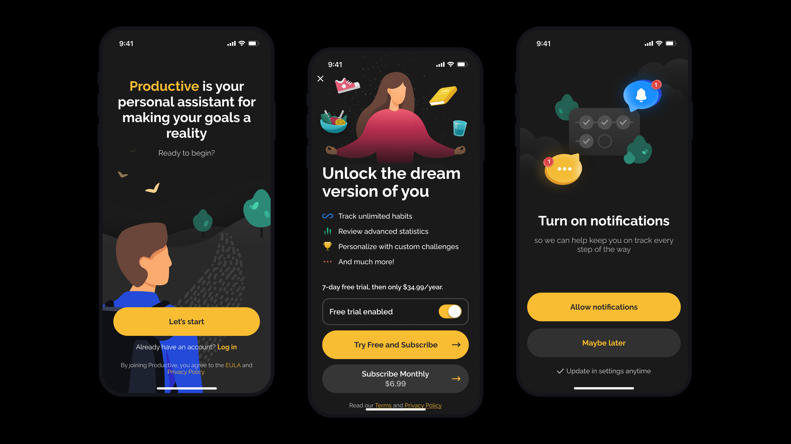
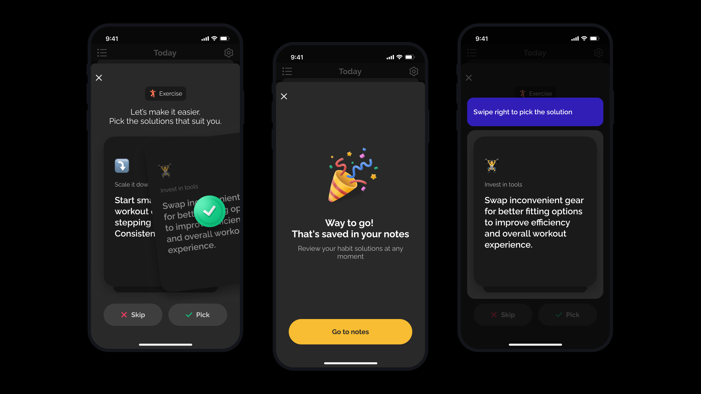
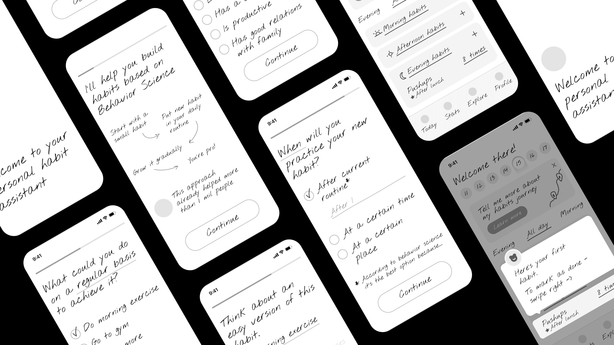

A habit tracker app that helps people build positive habits and new routines.

Productive is a habit tracker for iOS and Android that helps people build positive habits and new routines. As a product designer, I owned end-to-end product design — research, UX flows, UI, the design system, and illustration — and led the strategic pivot from a passive tracker to a personal habit assistant.
End-to-end product design — from research and visual identity to feature design and design reviews.
End-to-end UI/UX across both platforms, designed within iOS Human Interface and Android Material guidelines.
Led a new vision for the app — reframing Productive from a tracker into a personal habit assistant.
Ran first-time UX research to surface pain points; investigated ongoing UX questions to identify and troubleshoot user problems.
Maintained and extended the existing design system with new components; wireframed flows end-to-end to keep work consistent and shippable.
Some of the features I designed: personalized advice for users who missed a habit, a self-test flow for ADHD-awareness month, and iOS lock-screen widgets.
Custom illustrations woven through the product.
Subscription and limited-time offer screens — the monetization surfaces that fund the product.
Marketing materials (banners, landing pages, emails), partnered with QA, devs, UX writers and researchers, ran design reviews.

Screens from the personalized-advice flow, shown when a user regularly misses a habit.
The biggest piece of work was a pivot — turning Productive from a passive tracker into a personal habit assistant. It started with first-time UX research that surfaced where users dropped off and why, then carried that into a new product vision built around guidance rather than guilt.
Features like personalized advice for missed habits and the ADHD-awareness self-test flow grew directly out of those insights.

Some of the wireframes for the new vision — pivot to a personal assistant.